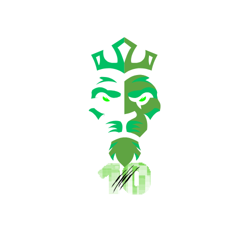

Autonomous Multi-Modal Video Slicing & Quality-Gated Viral Compilation Suite
In modern digital broadcasting, short-form vertical video (YouTube Shorts, TikTok, Instagram Reels) is the fastest-growing medium of global media consumption. However, human curation, quality control, cropping, audio rebalancing, and compiling long-form video into high-retention 9:16 vertical shorts is labor-intensive and expensive.
LionReel Studio is an autonomous, end-to-end video curation and compilation system. It replaces manual editing workflows with algorithmic computer vision, acoustic frequency analysis, and automated composition. The system queries video sources, enforces a 12-stage automated quality gate (eliminating blurry, shaky, watermark-contaminated, AI-synthetic, cartoon, or promotional content), detects viral peak moments using optical burst motion and audio energy, centers subjects dynamically with MOG2 background subtraction and Haar cascades, and renders color-graded, captioned short-form reels with custom music and branding.
| Layer | Technology / Tool | Architectural Purpose & Role |
|---|---|---|
| Core Engine | Python 3.10+ | Orchestrates processing pipeline, math arrays, and automation backend. |
| Computer Vision | OpenCV (cv2) & NumPy |
Laplacian variance, optical flow shake tracking, MOG2 subtraction, Haar cascades, Canny edges. |
| Media Processing | MoviePy & FFmpeg / FFprobe | Video cutting, frame transformation, -14 LUFS loudness normalization, and H.264 rendering. |
| Asset Generation | Pillow (PIL) | Dynamic stroke/shadow hook captions, watermark compositing, and thumbnail generation. |
| Content Ingestion | yt-dlp | Automated search query resolution, metadata filtering, and high-speed stream extraction. |
| Studio Backend | Python http.server |
Lightweight local REST API handling process dispatching, config sync, and live log streaming. |
| Frontend GUI | JavaScript (ES6+ Vanilla) | Reactive UI state management, real-time log polling, video player, and 5-step stepper. |
| Styling & UX | Modern CSS3 (Vanilla) | Emerald dark/light mode engine, glassmorphic layout cards, responsive controls, and animations. |
Every candidate clip is inspected through an automated sensory matrix before admission:
Calculates Laplacian variance on 16 sample frames. Rejects blurry frames or low resolution (<480p).
Tracks background motion along the outer 15% border. Excludes erratic handheld phone footage.
Computes RMS coefficient of variation (CV = σ / μ). Discards flat loud music; keeps natural pet audio.
Evaluates Canny edge density & brightness in all 4 corner regions to eliminate competitor watermarks.
Analyzes texture variance, high-frequency noise, and morphing artifacts to reject Sora, Kling & Runway clips.
Color histogram quantization and edge density profiling discard anime, drawings, and cartoons.
Differentiates normal 1-line subtitles (allowed) from full-screen commercial slides and meme text walls.
Employs Haar Cascades (frontal cat/dog face) and motion clustering to guarantee genuine pet visibility.
Cross-references video IDs and titles against historical logs to ensure zero content repetition.
Standardizes all outputs into modern smartphone vertical dimensions (1080x1920 pixels).
Performs CLAHE contrast enhancement in LAB space with brightness balancing to 118 mean value.
Fades and overlays curated ambient backing tracks under original audio without clipping.
Where M_burst is rapid optical acceleration, C_center rewards motion within the central 22%–78% vertical crop corridor, A_audio is acoustic RMS energy, and P_text penalizes full-screen promotional text walls.
Standard video tools center around (W/2, H/2), cutting off subjects at frame borders. Smart Crop V2 calculates foreground subject centroids using MOG2 background subtraction and Haar cascade bounding boxes, clamping with an 80px buffer:
Viewer retention drops within 3 seconds if the opening clip is dull. LionReel Studio isolates the single highest-energy clip as the opening hook, and sorts subsequent clips in ascending order of motion energy (E₁ < E₂ < ... < E_n) to produce an accelerating viral crescendo.
The system is accompanied by a modern, responsive web application served locally via Python:
To achieve the highest marks in an academic evaluation, the project offers excellent expansion opportunities:
| Area | Proposed Enhancement | Academic / Technical Impact |
|---|---|---|
| Deep Learning | Integrate YOLOv8-nano / RT-DETR | Replaces Haar cascades with real-time multi-class pet/human object detection & tracking. |
| Speech & NLP | OpenAI Whisper Integration | Automated speech-to-text generating animated, word-by-word karaoke-style captions. |
| Multimodal LLM | Google Gemini 1.5 Flash API | Evaluates clip humor from keyframes; automatically crafts viral titles, hashtags, and SEO tags. |
| Social Automation | YouTube Data API & TikTok API | Provides 1-click scheduled publishing directly from the web dashboard. |
| Cloud Deployment | Containerized Cloud Run / AWS ECS | Transforms the tool from a desktop utility into a scalable multi-tenant SaaS. |